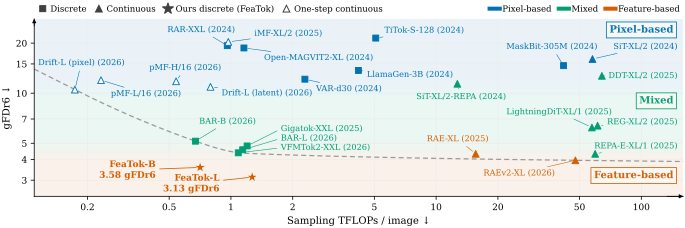
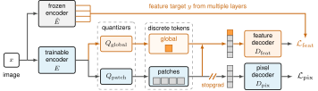
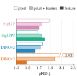
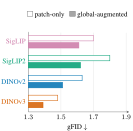
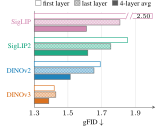
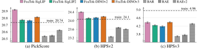

Train tokens with feature loss only
Train the tokenizer to reconstruct pretrained visual features. Stop gradients at the pixel decoder’s input so that pixel losses train only the decoder.
01 / Core idea
Learning visual representations in feature space improves downstream image generation. We observe this trend across both discrete and continuous representations.
FeaTok learns to reconstruct pretrained visual features. A separate decoder learns to turn the tokens into images, while pixel reconstruction gradients are kept out of the tokenizer.

02 / Visual samples
The text-to-image model uses a discrete tokenizer trained on ImageNet-1k to reconstruct SigLIP2 features.
03 / Method
Feature reconstruction trains the tokenizer. Pixel reconstruction trains the image decoder.

Train the tokenizer to reconstruct pretrained visual features. Stop gradients at the pixel decoder’s input so that pixel losses train only the decoder.
Use separate quantizers for global and patch features. Sample the global token first, then generate patch tokens conditioned on it.
Average normalized features from four evenly spaced encoder layers to combine visual detail with semantic information.
04 / Controlled ablations

01 / Feature loss
With patch tokens alone, feature targets improve generation over pixel targets for SigLIP, DINOv2, and DINOv3. SigLIP2 does not improve in this setting.

02 / Global to local
With the tokenizer held fixed, conditioning patch generation on a global token improves results for all four encoders.

03 / Encoder layers
Averaging four encoder layers gives lower gFID than using the first or last layer alone. This holds for all four encoders when generation includes a global token.
05 / Experimental results
We compare generation quality at two resolutions, sampling cost, and scores from human-preference models.
We report gFDr6 ↓, the mean Fréchet-distance ratio across six feature spaces. Lower scores are better. Sampling cost includes generation and one decoder pass. The best scores in each table are shown in bold.
All four FeaTok-L variants outperform the discrete baselines shown below. FeaTok-L-DINOv3 achieves the lowest gFDr6, both with and without guidance.
| Model | Generator size | TFLOPs/image without guidance | gFDr6 ↓ without guidance | gFDr6 ↓ with guidance |
|---|---|---|---|---|
| VAR-d30 | 2.0B | 2.29 | 12.14 | 6.75 |
| LlamaGen-3B | 3.1B | 4.18 | 13.70 | 5.97 |
| Gigatok-XXL | 1.4B | 1.20 | 4.82 | 4.24 |
| VFMTok2-XXL | 1.4B | 1.09 | 4.38 | 4.37 |
| BAR-B | 0.4B | 0.67 | 5.15 | 4.89 |
| BAR-L | 1.1B | 1.14 | 4.57 | 4.11 |
| FeaTok-B-DINOv3 | 0.4B | 0.71 | 3.58 | 3.39 |
| FeaTok-L-SigLIP | 1.1B | 1.27 | 4.00 | 3.92 |
| FeaTok-L-SigLIP2 | 1.1B | 1.27 | 3.45 | 3.27 |
| FeaTok-L-DINOv2 | 1.1B | 1.27 | 3.47 | 3.20 |
| FeaTok-L-DINOv3 | 1.1B | 1.27 | 3.13 | 3.08 |
At 512 × 512, FeaTok-L-DINOv3 also outperforms BAR-L and RAE on gFDr6, both with and without guidance.
| Model | gFDr6 ↓ without guidance | gFDr6 ↓ with guidance |
|---|---|---|
| RAE-XL | 3.03 | 2.13 |
| BAR-L | 3.82 | 2.94 |
| FeaTok-L-DINOv3 | 2.17 | 1.80 |
Without guidance, FeaTok-L-DINOv3 achieves lower gFDr6 than RAEv2 at substantially lower sampling cost. With guidance and its standard sampling budget, RAEv2 achieves the lowest gFDr6 in this comparison.
| Model | TFLOPs/image without guidance | gFDr6 ↓ without guidance | gFDr6 ↓ with guidance |
|---|---|---|---|
| REPA-E-XL/1 | 59.57 | 4.32 | 3.04 |
| RAE-XL | 15.59 | 4.32 | 3.26 |
| RAEv2-XL | 47.72 | 3.95 | 2.17 |
| FeaTok-L-DINOv3 | 1.27 | 3.13 | 3.08 |
We also evaluate generated images with PickScore, HPSv2, and HPSv3, which are trained on human preferences. On PickScore and HPSv2, FeaTok’s SigLIP2, DINOv2, and DINOv3 variants score closer to the training images than any baseline. On HPSv3, FeaTok-DINOv3 and FeaTok-SigLIP are closest. These gains come without training on reward scores.

@misc{featok2026xiaofeng,
title = {{FeaTok}: Feature-Loss Tokenization for Image Generation},
author = {Xiaofeng, Zhang and Lavoie, Samuel and
Beltran-Velez, Nicolas and Yuan, Jianhao and
Friedrich, Felix and Verbeek, Jakob and
Courville, Aaron and Drozdzal, Michal and
Romero-Soriano, Adriana},
note = {Manuscript}
}